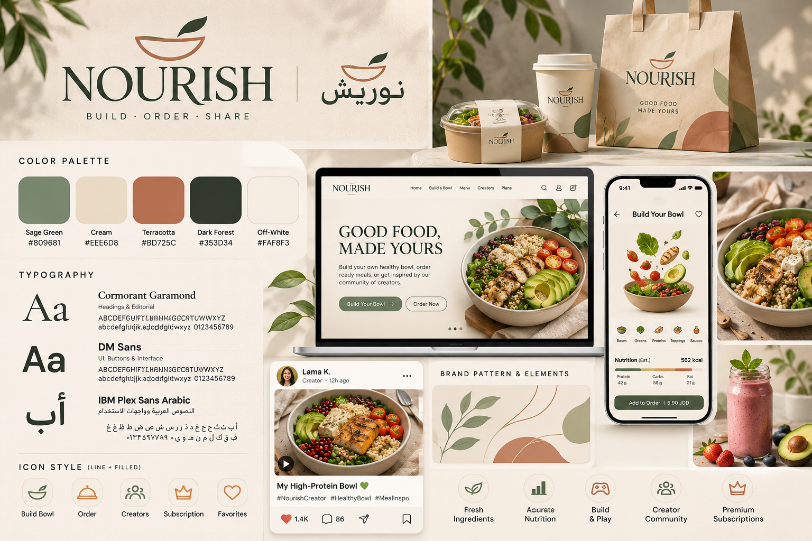
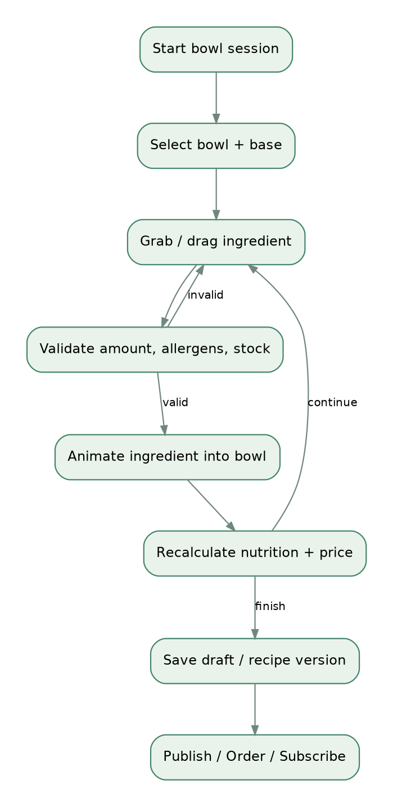
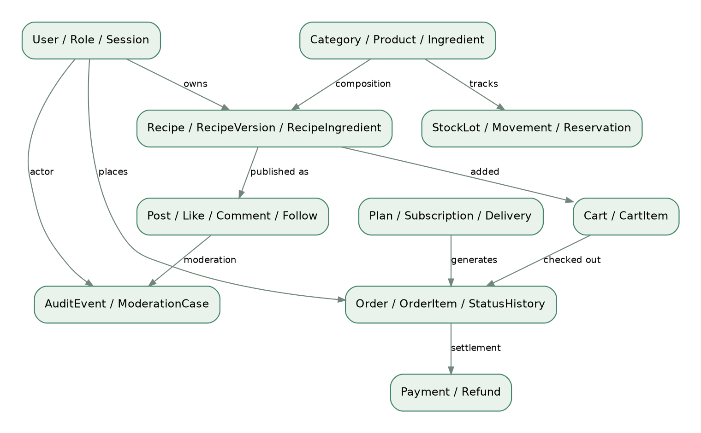

Drag-and-drop bowl builder
Pick ingredients and drop them into an on-screen bowl with visual assembly and playful feedback.
A healthy-food platform concept where building a personalized meal feels like a game — with a bowl you can actually fill, ingredient by ingredient.


NOURISH is a planned healthy-food commerce experience. Its defining feature is a gamified custom bowl builder: instead of selecting ingredients only through checkboxes, users interact with pieces of food, dragging and dropping them into a visible bowl as the meal comes together.
The intended experience connects this visual assembly to nutrition estimates and pricing updates. Customers could also select ready-made meals, explore creator dishes, or choose personalized meal subscriptions.
Pick ingredients and drop them into an on-screen bowl with visual assembly and playful feedback.
Planned calorie, macro and price calculations update as selected ingredients change.
Browse prepared meal choices as an alternative to building from scratch.
Explore recurring meal plans aligned to preferences and nutrition goals.
A creator could publish a custom bowl for followers to discover and order.
Proposed operations include order management, meal preparation status and administration workflows.
Start with a ready meal or select the custom bowl experience.
Drag ingredients into the bowl and review the visual result.
See planned price and nutrition estimates before confirming.
The future ordering workflow connects customer selection to kitchen operations.
The direction is warm and editorial rather than clinical: natural greens, a creamy backdrop, terracotta accents, botanical details and carefully spaced type. The brand uses a simple bowl-and-leaf symbol and the message Build · Order · Share.
The photos and UI boards shown above are the original brand materials created during the product concept stage.
Selected original identity and analysis assets from the NOURISH design and systems-analysis phase.


See other built projects and product concepts.